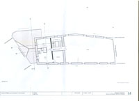

Une zone desservie par la cage d’escalier Un couloir desservant à gauche une chambre en face un petit salon de lecture à droite un studio indépendant.
Une zone accessible par l escaler a partir du petit salon du Rez de chaussée. Un grand palier desservant 3 chambres avec chacune sa salle de bains.
Un grand palier desservant une grande chambre avec sa salle de bains à droite et un immense grenier d’environ 150 mères carrés non aménagé à gauche.
Tous les aménagements sont de standing supérieur et n’ont jamais été utilisés.
Cette maison possède donc une grande pièce pouvant accueillir 80 personnes, une cuisine équipée aux normes actuelles, deux salons, un studio indépendant et cinq chambres avec salle de bains en suite. D’une décoration raffinée, chaque chambre est meublée (literie d’hôtellerie de luxe) et possède un accès Internet télévision et téléphone.
Telle qu’elle a été conçue équipée et décorée, Manechenea peut être exploitée dès à présent comme maison d’hôtes.